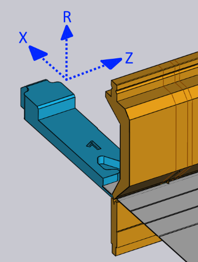

Επεξεργασία των πίσω αναστολέων
Οι θέσεις πίσω αναστολέα για κάθε κάμψη μπορούν να προσαρμοστούν κάνοντας απλώς κλικ στον πίσω αναστολέα — έτσι ανοίγει ο πίνακας Αναστολέας που προβάλλεται στο πλάι.
Ο πίνακας Αναστολέας

-
Χρησιμοποιήστε τον επιλογέα Οπίσθιος οδηγός για να επιλέξετε τον αναστολέα που θέλετε να επεξεργαστείτε (μπορείτε επίσης απλώς να κάνετε κλικ στον αναστολέα και θα εμφανιστεί ο πίνακας για να επεξεργαστείτε αυτόν τον αναστολέα). Εάν κάνετε κλικ στον άλλο αναστολέα με Κλικ+Shift, τότε μπορείτε να επεξεργαστείτε τις κοινές ρυθμίσεις και των δύο αναστολέων μαζί.
-
Οι καταχωρίσεις Z, X και R χρησιμοποιούνται για την προσαρμογή της θέσης των αναστολέων σε τρεις διαστάσεις. Για τις περισσότερες καμπτικές πρέσες, οι άξονες είναι όπως παρουσιάζονται στην παρακάτω εικόνα:[1]
 -
Ο επιλογέας Θέση κρατήματος χρησιμοποιείται για τη σύμπλεξη μιας διαφορετικής επιφάνειας του δακτύλου αναστολέα στο τεμάχιο. Το σύνολο των διαθέσιμων επιφανειών εξαρτάται από το μηχάνημα και ενδέχεται να μην ισχύουν όλες οι επιφάνειες για όλες τις κάμψεις (το TecZone Bend σάς ενημερώνει όταν μια συγκεκριμένη επιφάνεια δεν μπορεί να χρησιμοποιηθεί). Η παρακάτω εικόνα παρουσιάζει διαφορετικές επιφάνειες που χρησιμοποιούνται:

-
Η ρύθμιση Επιστροφή χρησιμοποιείται για τον ορισμό της απόστασης ανάσυρσης του αναστολέα πριν από την κάμψη. Για ορισμένες κάμψεις, ο αναστολέα πρέπει να ανασυρθεί (στην κατεύθυνση +X) σε κάποια απόσταση αφού το τεμάχιο συμπιεστεί από το στιγέα, αλλά πριν από την κάμψη του (για την αποφυγή μιας σύγκρουσης). Αυτή η ρύθμιση χρησιμοποιείται για τον έλεγχο της απόστασης ανάσυρσης. Όταν την επεξεργάζεστε, το TecZone Bend ανασύρει πραγματικά τον αναστολέα κατά την καθορισμένη τιμή ως προεπισκόπηση, έτσι ώστε να μπορείτε να κρίνετε αν η ανάσυρση μπορεί να είναι επαρκής.
-
Χρησιμοποιήστε το κουμπί Αυτόματος υπολογισμός για να ζητήσετε από το TecZone Bend να υπολογίσει μια θέση αυτόματα για τον καθορισμένο αναστολέα. Γενικά, το TecZone Bend θα έχει πολλές δυνατότητες αναστολής και με επανειλημμένο κλικ στο κουμπί Αυτόματη τοποθέτηση μετακινείστε σε αυτές τις δυνατότητες. Για να επιστρέψετε στην προεπιλογή, κλείστε τον πίνακα αναστολέα, κάνετε και πάλι κλικ στον αναστολέα και μετά κάνετε κλικ στο κουμπί Αυτόματη τοποθέτηση - η πρώτη θέση που επιλέγεται τότε είναι η προεπιλεγμένη (αυτό θα ήταν επίσης το αποτέλεσμα της αρχικής αυτόματης αλληλουχίας και εξοπλισμού).
-
Χρησιμοποιήστε το κουμπί Αναστροφή τεμαχίου για να εισαγάγετε την άλλη πλευρά του τεμαχίου στο μηχάνημα και υπολογίστε εκ νέου τη μέτρηση. Αυτό το κουμπί είναι παρόμοιο με το κουμπί Κατόπτριση τεμαχίου στον πίνακα κάμψης.
-
Χρησιμοποιήστε τα κουμπιά Συνέχεια και Πίσω για να μεταβείτε στην προηγούμενη ή στην επόμενη κάμψη και να επεξεργαστείτε τις θέσεις του αναστολέα αυτής της κάμψης.
Για προχωρημένους
Ακολουθούν μερικές πιο προηγμένες διαδικασίες με τους αναστολείς:
Επεξεργασία μέτρησης για πολλαπλές κάμψεις
Είναι δυνατή η επεξεργασία των θέσεων αναστολέα για πολλαπλές κάμψεις ταυτόχρονα.
Για το σκοπό αυτό επιλέξτε πρώτα πολλαπλές κάμψεις κάνοντας Κλικ+Shift στους αριθμούς κάμψης στον
πλοηγό κάμψης. Στη συνέχεια, κάνετε κλικ σε έναν αναστολέα. Η παρακείμενη εικόνα δίπλα παρουσιάζει τις θέσεις
αναστολέα για τις κάμψεις 1, 2 και 4 που υποβάλλονται σε επεξεργασία μαζί:

Σε αυτό το παράδειγμα, όλες οι κάμψεις χρησιμοποιούν την ίδια θέση Z για τον αναστολέα και η επεξεργασία αυτής της θέσης θα προσαρμόσει τη θέση Ζ για όλους τους αναστολείς. Οι τιμές θέσης X και R είναι κενές επειδή είναι διαφορετικές για κάθε κάμψη. Μπορείτε, ωστόσο, να πληκτρολογήστε μια τιμή X ή R και αυτή θα εφαρμοστεί για όλες τις κάμψεις.
Γενικά, σπάνια θα χρειαστεί να χρησιμοποιήσετε αυτήν τη λειτουργία. Ο πίνακας αναστολέα λαμβάνει υπόψη τους περιορισμούς μιας συγκεκριμένης καμπτικής πρέσας και επιβάλλει όλους τους απαιτούμενους περιορισμούς. Για παράδειγμα, οι θέσεις R των δύο αναστολέων πρέπει να είναι ίδιες για ορισμένα μηχανήματα (που δεν διαθέτουν ανεξάρτητους άξονες R1 και R2) - Το TecZone Bendδιασφαλίζει ότι όταν επεξεργάζεστε τη θέση R για έναν αναστολέα, ο άλλος προσαρμόζεται επίσης άμεσα.
Για ορισμένα μηχανήματα με συστήματα αναστολέων 2 αξόνων, οι θέσεις Z των αναστολέων ρυθμίζονται χειροκίνητα και δεν αλλάζουν συνήθως από κάμψη σε κάμψη (επειδή αυτό θα απαιτούσε να πρέπει ο χειριστής να προσαρμόζει χειροκίνητα το ς αναστολείς ύστερα από κάθε κάμψη). Για τέτοια μηχανήματα, όταν η θέση Z ορίζεται για μια κάμψη, η ίδια ορίζεται επίσης για όλες τις κάμψεις. Η κατάσταση σύγκρουσης, η κατάσταση σύμπλεξης του αναστολέα κλπ. υπολογίζονται για όλες τις κάμψεις άμεσα και έτσι είναι πολύ εύκολο να βρεθούν κοινές θέσεις Z1 και Z2 που μπορεί να είναι αποδεκτές για όλες τις κάμψεις.
Σύρσιμο αναστολέων
Αν και οι ακριβείς θέσεις αναστολής μπορούν να οριστούν πληκτρολογώντας τις τιμές Z, X και R, είναι συχνά πιο απλό να τοποθετήσετε τους αναστολείς σύροντάς τους απλώς σε επαφή με το τεμάχιο.
-
Κάνετε απλό κλικ για να επιλέξετε τον αναστολέα που θέλετε να σύρετε.
-
Κάνετε κλικ στον επιλεγμένο αναστολέα και σύρετέ τον για να τον τοποθετήσετε. Ανάλογα με την οπτική γωνία, ο αναστολέας σύρεται κατά μήκος ενός οριζόντιου ή ενός κατακόρυφου επιπέδου.
Συνήθως αρχίζετε με τον απομακρυσμένο από το τεμάχιο αναστολέα και τον σύρετε προς το
τεμάχιο μέχρι να έρθει σε επαφή με αυτό. Μπορείτε να συνεχίσετε να τον σύρετε παρακάτω (σπρώχνοντας τον αναστολέα μέσα στο τεμάχιο)
και τότε, ένα συρμάτινο πλαίσιο εξακολουθεί να κινείται αλλά ο πραγματικός αναστολέας ακινητοποιείται όταν έρθει σε επαφή με το τεμάχιο.

Στην παραπάνω εικόνα παρουσιάζεται αυτό στην πράξη — αρχίζουμε να σύρουμε τον αναστολέα προς τη μεταλλική πλάκα προς την κατεύθυνση που επισημαίνεται με το βέλος. Μόλις ο αναστολέας έρθει σε επαφή με τη μεταλλική πλάκα, ακινητοποιείται και μόνο μια απεικόνιση συρμάτινου πλαισίου εξακολουθεί να κινείται (σηματοδοτώντας πού επιχειρείτε να σύρετε τον αναστολέα). Με αυτόν τον τρόπο, είναι εύκολο να τοποθετήστε τον αναστολέα έτσι ώστε να έρχεται απλώς σε επαφή με το τεμάχιο χωρίς κενά και χωρίς συγκρούσεις.
Σε αυτήν την παραπάνω εικόνα εξετάζουμε τον αναστολέα από μια οπτική γωνία που είναι κοντά στη θέση επάνω κάτω. Έτσι, ο αναστολέας κινείται στο επίπεδο XZ και η τιμή R του αναστολέα διατηρείται σταθερή. Εάν περιστρέψετε την προβολή σε μια πιο ακραία προβολή, ο αναστολέας θα μετακινηθεί στο επίπεδο XR και η τιμή Z θα είναι σταθερή.
Ο σφιγκτήρας κουμπώνει κατά το σύρσιμο
Όταν σύρετε τον αναστολέα, είναι εύκολο να τοποθετήσετε με ακρίβεια τους αναστολείς όταν χρησιμοποιείτε μια από τις επιφάνειες τύπου ακινητοποίησης. Όταν χρησιμοποιείτε μια από τις επιφάνειες τύπου σφιγκτήρα, αυτό είναι πιο δύσκολο, επειδή πρέπει να συμπλέξετε και τις δύο επιφάνειες ενός δακτύλου σύσφιξης στο τεμάχιο.
Το TecZone Bend διευκολύνει αυτό παρέχοντας αυτόματα κουμπώματα όταν ο αναστολέας είναι κοντά
σε μια πιθανή θέση σύσφιξης. Για να χρησιμοποιήσετε αυτόν τον μηχανισμό, περιστρέψτε πρώτα την προβολή
έτσι ώστε να βλέπετε τους αναστολείς από επάνω προς τα κάτω. Στη συνέχεια, σύρετε τους αναστολείς έτσι ώστε η γωνία
που θέλετε να σφίξετε εφαρμόζει κοντά στο άνοιγμα των δακτύλων:

Η παραπάνω εικόνα παρουσιάζει μια διαδικασία σύσφιξης σε εξέλιξη. Καθώς σύρουμε τους αναστολείς κοντά σε μια θέση σύσφιξης, αυτοί κουμπώνουν στη θέση του σφιγκτήρα 1 (βλ. παραπάνω εικόνα, κέντρο). Συνεχίζοντας το σύρσιμο, οι αναστολείς κουμπώνουν τότε στη θέση του σφιγκτήρα 2 (βλ. παραπάνω εικόνα, δεξιά). Λάβετε υπόψη ότι η τιμή R του αναστολέα προσαρμόζεται αυτόματα προς τα επάνω ή προς τα κάτω καθώς μετακινούμαστε προς αυτά τα διαφορετικά κουμπώματα.